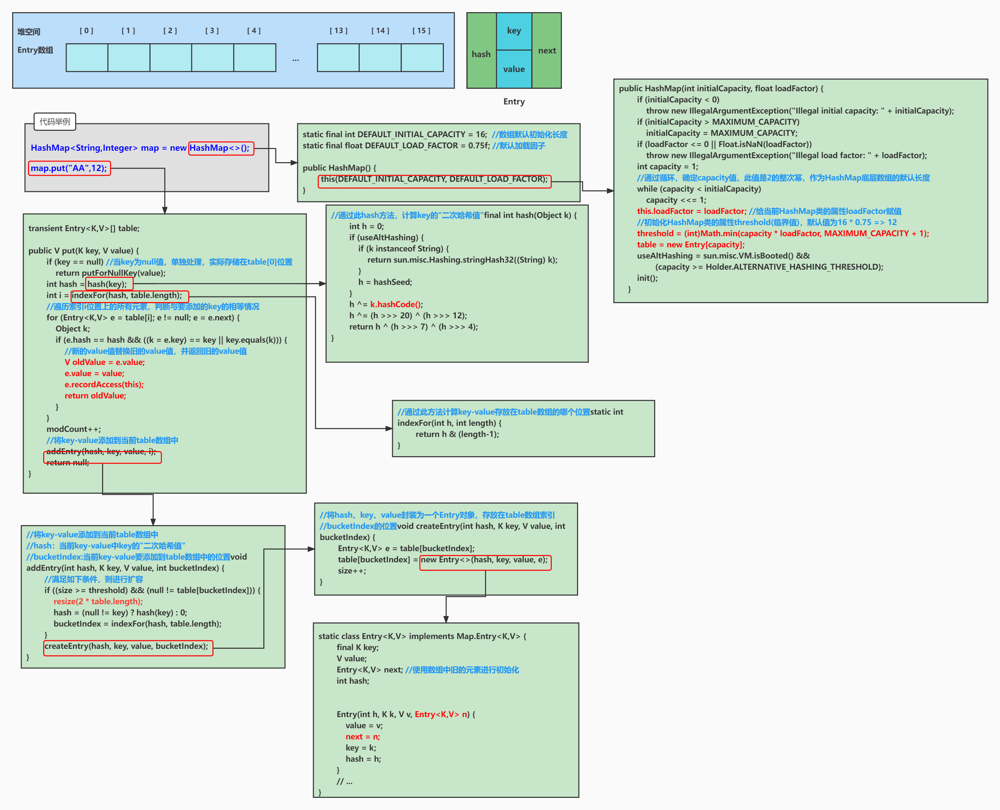

effectiveJava
第一章 引言
本书中大多数规则都是源于少数几条基本的规则
- 组件（即任何可重用的软件元素，例如单个方法或整个框架）的用户永远也不应该被其行为所迷惑
- 组件要尽可能小但又不能太小
- 代码应该被重用而不是被拷贝
- 组件之间的依赖性应该尽可能降低到最小
- 错误应该尽早被检测出来，最好是在编译阶段就被发现并解决
Java 支持以下几种基本数据类型：
整数类型：
byte：占用 1 字节，范围为 -128 到 127。short：占用 2 字节，范围为 -32,768 到 32,767。int：占用 4 字节，范围为 -2^31 到 2^31-1。long：占用 8 字节，范围为 -2^63 到 2^63-1。浮点数类型：
float：占用 4 字节，单精度浮点数，精度为 6-7 位小数。double：占用 8 字节，双精度浮点数，精度为 15-16 位小数。字符类型：
char：占用 2 字节，用于表示单个 Unicode 字符，范围为 0 到 65,535。布尔类型：
boolean：用于表示布尔值，取值范围为true或false。引用数据类型：
- 类 (Class)：类是对象的模板，可以定义复杂的数据结构和行为。
- 接口 (Interface)：接口定义类可以实现的一组方法，没有具体实现。
- 数组 (Array)：存储相同类型的元素的集合，支持多维数组。
- 枚举 (Enum)：定义常量集合的类型。
Java 中所有对象和数组类型都是引用类型，基本数据类型存储的是值，而引用类型存储的是对象的内存地址。
在 Java 中需要区分对象和对象变量。
对象（Object）：
- 对象是类的一个实例，它占用内存空间并包含实际的数据和行为。通过
new关键字创建。- 比如：
new String("Hello")是一个String对象，它在堆内存中占据一块空间。对象变量（Object Reference or Object Variable）：
- 对象变量是一个引用类型的变量，它保存的是对象在内存中的地址（引用），而不是对象本身。
- 例如，
String str = new String("Hello");中的str是对象变量，它指向内存中的String对象。举个例子：
2
3String str0;
String str1 = new String("Hello"); // 创建了一个对象，str1 是对象变量
String str2 = str1; // str2 也是对象变量，它与 str1 指向同一个对象在上面的代码中：
str0仅仅是一个对象变量，而不是一个对象，只有当new了之后对象变量才会引用一个对象（而不是包含一个对象）new String("Hello")创建了一个String对象。str1是指向这个对象的引用变量。- 当
str2 = str1时，str2也指向相同的对象，所以两个引用变量指向同一个内存地址。重要点：
- Java中的对象变量（引用数据类型）就是Cpp中的对象指针，Java中的引用数据类型引用的对象，全部存储在堆中
- 如果两个对象变量指向同一个对象，修改其中一个对象的属性可能会影响另一个对象变量看到的结果（如果是可变对象）引用数据类型就是指针，这个很好理解。
- 引用类型变量的默认值是
null，这意味着变量没有指向任何对象。
Java 方法传参时是按值传递的。对于基本数据类型，传递的是值的拷贝，函数内部对形参的修改不会影响到外部的实参。
但是，对于引用数据类型（如对象或数组），传递的也是“值”，不过这个值是对象的引用（即对象的地址）。因此，虽然传递的是引用的副本，但通过这个引用可以访问到对象本身，所以函数内部对对象的修改将影响到外部的实参对象本身。不过，如果在函数内部让引用指向一个新的对象，外部的引用并不会受到影响。只要留意到对象引用（对象变量）和对象的区别，并坚定地认为是按值传递就不会出错
简单来说：
- 如果函数修改的是引用指向的对象的内容，外部会受到影响。
- 如果函数修改的是引用本身（指向新的对象），外部不会受到影响。
例如
2
3
4
5
6
7
8
9
10
11
12
13
14
15
16
17
18
19
20
21
22
23
24
25
26
public class functionTest {
static class test{
private int data;
test(){
data=0;
}
}
static void modify(test t){
//发生了 test t=a,这样的按值传递,t指向的是和参数指向的同一个对象
//指向同一个对象，修改会发生
t.data=1;
//修改了t这个新对象引用的情况，参数a并不受影响，a还是指向之前的对象
t=new test();
}
public static void main(String[] args) {
test a = new test();
test b=a;
System.out.println(a.data); //0a
modify(a);
System.out.println(a.data); //1
System.out.println(b==a); //true
}
}
在 Java 中，包级私有（Package-Private，也叫默认访问控制或缺省访问控制）是一种访问修饰符。它的特点是：如果不显式声明为
public、protected或private，则默认情况下，类、变量或方法的访问权限是包级私有。这意味着该类、变量或方法只能在同一个包内被访问，不能被其他包中的类访问。包级私有的特点
访问权限：仅限于同一包中的类访问，包外的类无法访问。
修饰符：没有任何修饰符。例如：
2
3
4
5
6
7class MyClass {
// 这个类是包级私有的
int myField; // 这个字段是包级私有的
void myMethod() { // 这个方法是包级私有的
// 一些逻辑
}
}在上面的代码中，
MyClass类、myField字段和myMethod方法都是包级私有的，它们只能被位于相同包中的其他类访问，不能被其他包中的类访问。示例
假设有以下两个包：
com.example.package1com.example.package2
MyClass在com.example.package1包中定义：
2
3
4
5
6
7
8package com.example.package1;
class MyClass {
int myField; // 包级私有字段
void myMethod() { // 包级私有方法
System.out.println("This is a package-private method.");
}
}在同一个包 (
com.example.package1) 中的另一个类可以访问MyClass的字段和方法：
2
3
4
5
6
7
8
9package com.example.package1;
public class Test {
public static void main(String[] args) {
MyClass obj = new MyClass();
obj.myField = 10; // 访问包级私有字段
obj.myMethod(); // 调用包级私有方法
}
}但是，如果在另一个包 (
com.example.package2) 中尝试访问MyClass，将会导致编译错误：
2
3
4
5
6
7
8
9
10
11package com.example.package2;
import com.example.package1.MyClass;
public class Test {
public static void main(String[] args) {
MyClass obj = new MyClass(); // 编译错误，MyClass 对外包不可见
obj.myField = 10; // 编译错误，无法访问包级私有字段
obj.myMethod(); // 编译错误，无法调用包级私有方法
}
}总结
- 包级私有是一种没有显式修饰符的访问级别。
- 只能在同一个包内访问，包外无法访问。
第二章 创建和销毁对象
第一条：用静态工厂方法代替构造器
注意区分：
Boolean是引用数据类型（也称为包装类型），而boolean是值类型（基本数据类型）。在 Java 中：
boolean是一种基本数据类型，它只表示两种可能的值：true或false。它的值是存储在栈上的实际布尔值，因此它是一个简单的、轻量的、不可为null的类型。
Boolean是一个引用数据类型，也叫做包装类（Wrapper Class）。它是一个对象，可以表示true或false，并且可以为null。包装类允许我们在需要对象的地方使用基本数据类型。Boolean包含了一些实用方法，比如parseBoolean()和valueOf()。两者的区别主要体现在以下几点：
存储位置：
boolean存储在栈中，属于值类型。Boolean是一个对象，存储在堆中，通过引用访问。性能：
boolean是基本类型，直接在内存中存储值，性能较好。Boolean是对象，涉及到内存的分配和引用管理，因此会稍微慢一些。
null值：
boolean不能为null，只能是true或false。Boolean可以为null，适合用于一些情况下需要表示 “未知” 或 “未定义” 状态。自动装箱/拆箱：
- Java 支持自动装箱（autoboxing）和自动拆箱（unboxing），即可以自动将
boolean转换为Boolean，反之亦然。例如：
2Boolean boolObj = true; // 自动装箱，等同于 Boolean boolObj = Boolean.valueOf(true);
boolean boolVal = boolObj; // 自动拆箱，等同于 boolVal = boolObj.booleanValue();因此，
boolean适用于简单、高效的逻辑操作，而Boolean则适用于需要对象引用的情况，比如在集合类（如List）中使用布尔值时。
静态工厂方法是一种用于创建对象的设计模式。在Java中，它是指用一个静态方法来返回类的实例，而不是使用类的构造器来直接创建对象。该方法可以位于类的内部或外部，返回的可以是新创建的对象，也可以是现有的对象。静态工厂方法和设计模式中的工厂方法不同
静态工厂方法的特点
- 静态方法：静态工厂方法是用
static修饰的方法，属于类而不是实例。- 返回类型：静态工厂方法返回类的实例，但可以灵活返回子类的对象或其他缓存的实例。
- 不必每次都创建新对象：与构造器不同，静态工厂方法可以复用现有对象，如单例模式中只返回一个实例。
- 可以有更具描述性的方法名：不像构造器只能使用类名，静态工厂方法可以根据其用途有更具描述性的名称。
静态工厂方法的优点
具有描述性的名称：相比构造器只能使用类名，静态工厂方法允许开发者为方法命名，使代码更易读。例如：
LocalDate date = LocalDate.of(2023, 10, 1); // 更具意义的创建日期方法可以控制实例的创建：静态工厂方法可以根据需要返回已经存在的实例，避免不必要的对象创建。例如，单例模式：
2
3
4
5
6
7
8
9public class Singleton {
private static final Singleton instance = new Singleton();
private Singleton() {} // 私有化构造器，防止外部直接实例化
public static Singleton getInstance() {
return instance; // 只返回唯一的实例
}
}可以返回子类对象：静态工厂方法可以返回类的子类对象，具体取决于条件。这在某些场景下比直接使用构造器更具灵活性。
2
3
4
5
6
7
8
9
10public class ShapeFactory {
public static Shape createShape(String type) {
if (type.equals("circle")) {
return new Circle();
} else if (type.equals("square")) {
return new Square();
}
return null;
}
}可以进行额外的逻辑处理：静态工厂方法可以包含额外的创建逻辑，比如验证参数、初始化默认值等。
常见的静态工厂方法模式
valueOf()：返回已有对象或根据给定值创建对象。of()：简便工厂方法，常用于不可变类型。getInstance()：获取单例实例。newInstance()：创建新的对象实例。getType()：获取特定类型的实例。示例
2
3
4
5
6
7
8
9
10
11
12
13
14
15
16
17public class Car {
private String model;
private String color;
private Car(String model, String color) {
this.model = model;
this.color = color;
}
// 静态工厂方法，创建Car实例
public static Car createCar(String model, String color) {
return new Car(model, color);
}
}
// 使用静态工厂方法代替构造器
Car car = Car.createCar("Tesla", "Red");什么时候使用静态工厂方法
- 当你想要更灵活的对象创建控制时。
- 当对象的创建逻辑复杂，不希望直接通过构造器创建时。
- 当你需要返回缓存实例或复用实例时（如单例模式）。
- 当你想隐藏具体类的构造细节，只暴露公共接口时。
优势：
- 有名称
- 可以复用对象（享元模式）
- 可以返回任何子类对象
- 返回的对象的类可以根据参数变化（简单工厂）
- 返回的对象的类，在编写这个静态工厂方法的时候可以不存在（只返回接口类，而具体实现类可以后续再动态加载）
缺点： - 类必须有一个public或protected的构造器，如果是private的，子类将无法继承这个类，因为子类会调用父类构造器
- 类的静态工厂方法不是必须写的，API文档也没有明确标识，因此程序员很难发现有这个方法。不过有一些惯用名称
在Java中，静态工厂方法常常使用一些约定俗成的命名模式，以提高代码的可读性和一致性。常见的惯用名称包括：
from
用于描述将一个类型转换为当前类型的工厂方法。
示例：Date.from(Instant instant)of
用于根据多个元素构造当前类型的实例，通常是直接根据参数生成对象的简洁方法。
示例：ArrayList<String> arrayList = new ArrayList<>(List.of("a", "b", "c"));valueOf
用于将某个值转换为当前类型的实例，常见于枚举和包装类。
示例：Integer.valueOf(String s)instance / getInstance
用于返回类的一个实例，可能是一个单例或其他共享实例。有时可能通过方法参数描述
示例：Calendar.getInstance()create/newInstance
用于显式地创建一个新实例，通常用于某些工厂类。
示例：ThreadFactory.create()getType
用于返回当前类中的某个特定类型实例，Type通常是一个具体的子类或接口。
示例：NumberFormat.getCurrencyInstance()newType
类似于getType，但更明确地表达了创建一个新实例。
示例：Executor.newCachedThreadPool()这些命名惯用法能够帮助开发者迅速理解工厂方法的意图，从而提高代码的可读性和易用性。
第二条：遇到多个构造器参数时要考虑构建器
当类的构造器参数很多的时候，考虑使用建造者模式。建造者模式分离出了创造产品的过程。先得到一个builder对象，然后在builder对象上调用类似setter的方法设置具体的很多参数，最后build返回出具体的产品（例如StringBuilder）。builder的优势在于可以有多个可变参数，并且还可以多次调用同一个setter，灵活性更高。但是在对性能要求高的场景下，为了创建builder可能会花费额外的很多时间，因此在构造器参数很多时再使用
在Java中，Java并没有像一些其他编程语言（如Python）那样明确的
self或this类型。然而，Java通过其他方式实现类似的功能，通常通过泛型（generics）来模拟一种"self"类型。我们常常需要这种"self"类型来表示某个类中的方法返回的是当前实例类型的对象，尤其是在链式调用的设计中。下面详细解释这一点。1. 问题背景
Java中的类方法中可以使用
this关键字引用当前对象，但this的类型是当前类的具体类型。而在面向对象编程中，我们有时需要在基类中定义一个返回当前对象的泛型方法，并希望子类调用时也能返回子类的实例。如果直接返回this，在继承层次结构中可能导致子类调用时返回父类的实例，而不是子类的实例，这就导致了问题。2. 解决方案：使用递归泛型，即泛型T是递归的
为了在基类中返回当前的具体子类类型（模拟“self”类型的效果），我们可以使用递归泛型（Curiously Recurring Template Pattern，CRTP）。递归泛型允许我们在定义一个类时，将子类的类型作为泛型参数传递给基类。这样基类的某些方法可以返回子类的类型。
如果在父类中直接返回
this，在子类中调用该方法时，返回的类型将是父类的类型，而不是子类的类型。这可能导致方法链不再返回子类的实例，从而影响代码的灵活性和可扩展性。以下是一个示例来说明这一点：示例代码
2
3
4
5
6
7
8
9
10
11
12
13
14
15
16
17
18
19
20
21
22
23
24
25
26
27
28class Parent {
// 直接返回this，类型为Parent
public Parent getThis() {
return this;
}
}
class Child extends Parent {
// 子类特有的方法
public void childMethod() {
System.out.println("This is a method in Child.");
}
}
public class Main {
public static void main(String[] args) {
Child child = new Child();
// 调用父类的getThis方法
Parent parentRef = child.getThis(); // 返回的是Parent类型
// 试图调用Child的方法
// parentRef.childMethod(); // 这将导致编译错误，parentRef是Parent类型
// 可以调用Parent的方法
System.out.println("Returned instance type: " + parentRef.getClass().getSimpleName());
}
}输出结果
Returned instance type: Child解释
Parent类：定义了一个方法getThis()，直接返回this，但返回类型是Parent。Child类：继承自Parent，并增加了一个方法childMethod()。Main类：在main方法中创建了Child的实例child，调用了getThis()，并将结果赋值给Parent类型的引用parentRef。问题
- 当调用
child.getThis()时，返回的是Parent类型的引用parentRef。虽然parentRef实际上指向的是Child的实例，但由于返回类型是Parent，所以编译器不允许我们调用Child特有的方法childMethod()，这就限制了代码的灵活性。- 如果我们需要在
parentRef上调用childMethod()，就会出现编译错误，因为parentRef被视为Parent类型。解决方案
为了在返回类型上保留子类的信息，我们可以使用递归泛型：
2
3
4
5
6
7
8
9
10
11
12
13
14
15
16
17
18
19
20
21
22
23
24
25//这里泛型T是递归的
class Parent<T extends Parent<T>> {
//也可以父类不实现这个方法，只提供接口，由每个继承的子类重写这个方法，他们的方法体直接return this即可，不需要强制类型转换
public T getThis() {
return (T) this; // 强制转换为子类类型
}
}
class Child extends Parent<Child> {
public void childMethod() {
System.out.println("This is a method in Child.");
}
}
public class Main {
public static void main(String[] args) {
Child child = new Child();
// 调用父类的getThis方法，返回的是Child类型
Child childRef = child.getThis(); // 返回Child类型
// 现在可以调用Child的方法
childRef.childMethod(); // 这将成功调用Child的方法
}
}在这个修改后的版本中，
getThis()方法返回的是具体子类的类型，使得代码的灵活性得到了提升。通过使用递归泛型，我们确保了方法调用的正确性和类型安全性。3. 递归泛型的工作原理
- Base类：定义了一个泛型类，
Base<T>，其中T代表具体的子类类型。self()方法返回当前实例，并将其转换为T类型。- Derived类：通过继承
Base<Derived>，将自身Derived类型传递给基类的泛型参数，这样基类中的self()方法在Derived类中调用时会返回Derived类型的实例。4. 优势
- 链式调用：递归泛型允许在基类中定义方法，返回子类的类型，因此可以在子类中使用链式调用，避免每次返回父类的类型而还需要转换类型，可以直接方法链接。
- 灵活性和可扩展性：可以轻松扩展到更复杂的继承结构，每个子类都可以继承并复用基类的逻辑，同时保持方法调用的正确类型。
5. 限制
这种模式在Java中虽然常见，但它依赖于强制类型转换（如上面的
(T) this），这虽然在大多数情况下是安全的，但强制转换始终带有一定的风险。如果滥用，可能在某些情况下会导致ClassCastException。通过递归泛型，我们有效地模拟了"self"类型，使得返回值能够根据具体的子类自动调整类型，在面向对象设计中实现了更灵活和类型安全的接口设计。
在Java中，协变返回类型（Covariant Return Type）指的是子类方法重写父类方法时，可以返回父类方法返回类型的子类类型。这种特性允许在继承中保持更具体的返回类型，从而增强了灵活性和可读性。
示例
考虑以下代码示例：
2
3
4
5
6
7
8
9
10
11
12
13
14class Animal {
public Animal makeSound() {
System.out.println("Some sound");
return new Animal();
}
}
class Dog extends Animal {
@Override
public Dog makeSound() {
System.out.println("Bark");
return new Dog(); // 返回类型为Dog，这是Animal的子类
}
}在这个例子中：
Animal类有一个makeSound()方法，返回类型为Animal。Dog类重写了makeSound()方法，返回类型为Dog，这使得makeSound()方法的返回类型从Animal变为Dog，即实现了协变返回类型。优点
- 类型安全：子类可以返回更具体的类型，避免了类型转换的麻烦。
- 增强可读性：代码更加直观，能够清晰地表明方法的具体返回类型。
注意事项
- 协变返回类型只能在方法重写中使用。
- 返回类型必须是父类返回类型的子类或相同类型。
这种特性在面向对象编程中是一个很有用的特性，尤其是在涉及多态性时，可以使代码更具灵活性。
第三条：用私有构造器或者枚举类强化Signgleton属性
下面是单例的实现方法：
饿汉静态常量
1 | |
另一种考虑是直接将成员instance设为public，这样就不需要通过getInstance来获得，除非有能想到的扩展优势，一般用这样更简单的方法。饿汉式如果从未使用就会造成内存浪费，但也要注意拥有特权的用户可以借助AccessibleObject.setAccessible方法，通过反射调用私有构造器
饿汉静态代码块
1 | |
在Java中，类的生命周期包括**加载（Loading）、链接（Linking）、初始化（Initialization）、使用（Using）和卸载（Unloading）**五个主要阶段。以下是对每个阶段的详细描述，尤其是代码块的调用顺序和时机：
1. 类的加载（Loading）
当类第一次被使用时，Java类加载器会将类文件从磁盘或其他存储设备中加载到内存中。加载过程主要包括：
- 类加载器（ClassLoader）找到对应的
.class文件，并将其加载到内存中形成字节码。- 类加载完成后，会生成Class对象，它表示该类在JVM中的结构和元数据。
类的加载是由类加载器（ClassLoader）完成的，类加载器有很多种，包括启动类加载器（Bootstrap ClassLoader）、扩展类加载器（Extension ClassLoader）、**应用类加载器（Application ClassLoader）**等。
2. 类的链接（Linking）
链接阶段将类的字节码进行验证、准备和解析，确保类可以正确执行。这一阶段包括三个步骤：
- 验证（Verification）：确保类的字节码格式正确，并且不会违反JVM的安全规则（如类型安全性）。
- 准备（Preparation）：为类的静态变量分配内存，并初始化为默认值（如
int类型为0，boolean类型为false等）。- 解析（Resolution）：将类的符号引用（如类、方法、字段的名字）解析为直接引用，指向具体的内存地址。
3. 类的初始化（Initialization）
在链接之后，类的初始化阶段会执行类中的静态代码块、静态变量赋值等操作。这是类生命周期中最关键的阶段，以下是初始化过程中的代码执行顺序：
静态变量和静态代码块：
- 静态变量：类的静态变量按在类中定义的顺序依次初始化。例如：
public static int a = 10;- 静态代码块：静态代码块会在类加载时执行。多个静态代码块按顺序执行。例如：
2
3
4
5
6static {
System.out.println("Static block 1");
}
static {
System.out.println("Static block 2");
}- 以上代码在类加载时会按顺序输出
Static block 1和Static block 2。构造代码块：
- 构造代码块是在每次创建对象时执行的代码块。构造代码块的执行顺序在构造方法之前。例如：
每次创建对象时，这段代码都会在构造方法之前执行。
2
3{
System.out.println("Instance block");
}构造方法：
- 构造方法是每次创建对象时执行的，用于初始化对象的实例变量。例如：
构造方法的执行顺序是在所有的静态代码块和构造代码块之后。
2
3public ClassName() {
System.out.println("Constructor");
}4. 类的使用（Using）
在类初始化完成后，该类即可用于创建对象或调用其静态方法。静态方法的调用只会触发类的加载和初始化，而实例方法则需要在类初始化后创建对象，然后调用。
例如：
2ClassName obj = new ClassName(); // 调用构造函数
ClassName.staticMethod(); // 调用静态方法5. 类的卸载（Unloading）
当类不再被使用，且没有任何类的实例或引用存在时，JVM会在垃圾回收时将该类从内存中卸载。卸载通常发生在没有引用指向类的情况，且类加载器也没有再持有该类的引用时。
卸载的过程由JVM自动管理，程序员不需要主动干预。类的卸载可以回收类所占用的内存空间。
调用顺序总结
- 类加载时，JVM会根据需要加载类的字节码。
- 类链接阶段包括验证、准备和解析。
- 类初始化时：
- 静态变量和静态代码块按照它们在代码中出现的顺序执行。
- 每次创建对象时，构造代码块会先于构造方法执行。
- 类使用时，静态方法或实例方法会在初始化之后调用。
- 最后，类在卸载时从内存中移除。
懒汉线程不安全
1 | |
多线程同时进入if判断会生成多个实例
懒汉线程安全
1 | |
每次调用getInstance时都只能有一个线程调用，效率低，注意不能只把synchronized加载if里面，那样还是会有多个线程进入if
在 Java 中，
synchronized是一种关键字，用于实现线程同步，确保多线程环境下对共享资源的安全访问。它通过锁机制来防止多个线程同时执行某些代码块，从而避免数据不一致或竞态条件。以下是对synchronized的详细解释：
synchronized的基本概念
在多线程环境中，如果多个线程同时访问和修改共享资源（如变量、对象等），可能会导致数据不一致。synchronized用来确保同一时刻只能有一个线程访问某个特定的代码块或方法，其他线程必须等待，直到该线程执行完毕释放锁。
synchronized的用法
synchronized主要可以用于两种场景：
同步方法：将整个方法设为同步方法，保证在同一时刻只有一个线程能够执行这个方法。
2
3public synchronized void someMethod() {
// 同步的代码
}同步代码块：可以在方法中指定某段代码块为同步代码块，锁定某个对象，只有获取到该对象的锁后才能执行这段代码。
2
3
4
5public void someMethod() {
synchronized (this) { // 锁定当前对象
// 同步的代码
}
}或者：
2
3
4
5public void someMethod(Object lock) {
synchronized (lock) { // 锁定某个对象
// 同步的代码
}
}
synchronized的锁机制
每个对象都有一个与之相关联的内部锁（monitor）。当一个线程进入synchronized修饰的方法或代码块时，它必须先获得该对象的锁。一旦锁被线程占有，其他线程就不能再进入同一对象的synchronized方法或代码块，必须等待锁被释放。
实例方法的锁：当
synchronized修饰实例方法时，锁的是当前对象实例（即this），只有一个线程可以访问该对象的同步实例方法。静态方法的锁：当
synchronized修饰静态方法时，锁的是该类的 Class 对象，因为Java 中的 Class 对象是 JVM 中用来描述类的元数据（例如类的名称、方法、字段等），它是一个运行时的对象表示，每个加载的类在 JVM 中都会对应唯一的一个 Class 对象，并且该类的所有实例共享这个 Class 对象。所有该类的实例都共享这个锁。代码块的锁：使用
synchronized修饰代码块时，锁的是指定的对象。可以通过锁不同的对象来实现更细粒度的同步控制。
synchronized和重入锁（Reentrant Lock）
synchronized是一种简单的同步机制，但在一些复杂的场景中，Java 提供了java.util.concurrent.locks.ReentrantLock来替代synchronized，它提供了更灵活的同步机制，允许显式获取和释放锁，并支持更高级的特性如公平锁和条件变量。
双重检查
1 | |
只有第一次使用（instance==null）的时候才用同步控制线程，非空直接返回。第一次if是为了效率，可以直接返回；第二次if是为了确保同步的实现，如果没有第二个if可能会：第一次使用时两个线程同时进入if，第一个线程获得锁创建实例后归还锁，然后第二个线程得到锁之后又创建实例。但是必须注意volatile防止指令重排，确保写操作在读操作之前完成的作用。JVM创建对象的时候先分配空间赋予域初始值，然后才调用构造器方法写内存。如果某线程分配空间之后，还没有构造赋值就被另一个线程抢占，那么返回的对象域值将只是初始值，加了volatile之后，一旦调用new，JVM会保证对象完全初始化结束（写）之后才允许其他线程访问（读），防止半初始化的对象
JVM 创建对象时，确实会先分配内存并为对象的实例变量（成员变量）赋予默认初始值，然后再调用构造器方法执行进一步的初始化。这是对象创建过程中的标准步骤。
具体来说，对象的创建过程大致可以分为以下几个阶段：
1. 内存分配（Memory Allocation）
- 当使用
new关键字创建一个对象时，JVM 首先会在堆内存中为该对象分配内存。- 分配的内存大小取决于该对象所属的类的定义，包括所有实例变量所需的空间。
- 此时，JVM 会为每个实例变量分配空间，并按照其类型设置默认初始值（而不是显式赋值）。
- 基本数据类型的默认初始值：
int、short、byte、long：默认为0float、double：默认为0.0char：默认为'\u0000'（null 字符）boolean：默认为false- 引用类型的默认初始值：所有引用类型（对象、数组等）的默认值是
null。2. 执行构造方法前的默认初始化
- 在内存分配和默认值赋值完成后，对象的内存空间已经分配好了，并且所有实例变量都被设置为默认值。但此时对象尚未完成构造。
3. 调用构造器方法（Constructor Invocation）
- 接下来，JVM 调用对象的构造方法（
constructor），该方法可以进一步对对象进行初始化操作。
- 在构造器中，你可以为实例变量赋值或者进行更复杂的初始化操作（如调用其他方法、进行逻辑运算等）。
- 如果构造器中没有对某个实例变量赋值，那么该变量将保留前一步中的默认初始值。
4. 对象完成初始化
- 当构造器方法执行完毕，内存中的对象才算真正完成初始化。此时，对象的引用将指向分配的内存，可以返回给调用者，且可以被使用。
总结
是的，JVM 在创建对象时会按照以下顺序操作：
- 分配内存：为对象在堆中分配空间。
- 默认初始化：为对象的所有实例变量赋予默认初始值。
- 调用构造器：通过构造器方法进行显式初始化，覆盖默认初始值或进行进一步的初始化。
- 完成初始化：构造器执行完毕后，内存中的对象初始化完成。
对于对象的创建，使用 volatile 可以确保对象的引用被分配并指向内存区域时，对象已经完全初始化，从而避免其他线程看到“半初始化”的对象。
在Java中，
volatile关键字用于修饰变量，以确保该变量在多线程环境中可见，并防止指令重排序。它是一种轻量级的同步机制，主要用于解决多线程下的可见性问题，而不是原子性问题。下面详细解释一下volatile的核心概念：
- 内存可见性（Memory Visibility）
在Java中，线程之间的通信是通过主内存（Main Memory）完成的。每个线程都有自己的工作内存（Thread Local Memory），其中保存着从主内存中读取到的变量副本。如果一个线程对某个变量进行了修改，其他线程可能并不能立即看到这个修改，除非这个修改被刷新回主内存，而其他线程从主内存重新读取该变量。
volatile修饰的变量可以保证一个线程对该变量的修改会立刻被刷新到主内存中，而其他线程读取时会从主内存中读取最新的值。这样可以确保多线程对该变量的修改是可见的。确保写操作一定在读操作之前。
- 禁止指令重排序（Instruction Reordering）
编译器和CPU在执行代码时，可能为了优化性能，会对指令进行重排序。但这种重排序有时会导致多线程程序中的并发问题。
volatile关键字可以防止指令重排序。在使用volatile修饰的变量时，所有对这个变量的写操作都不会与之前的读写操作重排序；所有对这个变量的读操作也不会与之后的读写操作重排序。
- 示例
2
3
4
5
6
7
8
9
10
11
12
13
14class MyClass {
private volatile boolean flag = false;
public void setFlagTrue() {
flag = true; // 写操作
}
public void doSomething() {
while (!flag) {
// 线程会不断检查flag的值
}
System.out.println("Flag is true, exit loop");
}
}在这个例子中，两个线程分别执行
setFlagTrue()和doSomething()。如果flag没有被volatile修饰，那么一个线程对flag的修改可能不会及时被另一个线程看到，导致doSomething()方法中的循环无法退出。但使用volatile后，flag的修改会立即对其他线程可见，确保程序按预期执行。
volatile的局限性
不保证原子性：
volatile仅保证可见性和有序性，但它不能保证操作的原子性。例如，对volatile修饰的int变量执行i++操作时，它仍然不是原子的，因为i++实际上是三步操作：读取、加1、写回。尽管读取和写回都能确保可见性，但这三步之间可能被其他线程打断，导致竞态条件。轻量级同步：相比于
synchronized，volatile不会造成线程的阻塞。因此，它适用于某些轻量级的同步场景，但不能替代synchronized实现复杂的线程同步。5. 适用场景
volatile适用于以下场景：
- 变量在多个线程之间共享，且被频繁读写。
- 不需要通过
volatile变量实现复杂的同步逻辑，仅仅是确保线程间的可见性。- 例如标志位、状态标志等简单的同步机制。
总的来说，
volatile提供了一种在多线程环境下保证变量可见性和顺序性的方法，但它不能替代锁机制来解决原子性问题。在并发编程中，volatile适合用来修饰一些轻量级、无需复杂同步的共享状态变量。
静态内部类
1 | |
只有 getInstance 被调用时，静态内部类才会第一次被JVM加载，且以线程安全的模式初始化好静态内部类的静态域
在 Java 中，内部类和静态内部类的加载时机有所不同，它们的加载时机由 JVM 控制，具体取决于它们的定义方式和使用场景。以下是对两者的详细描述：
1. 内部类（Non-static Inner Class）的加载时机
内部类是与外部类关联的类，它不能独立存在，必须通过外部类的实例来创建和访问。其加载时机如下：
- 依赖外部类的实例： 内部类的实例是依赖外部类的实例而存在的。换句话说，只有在外部类的实例被创建后，内部类才可能被创建。内部类会在它被实例化时进行加载，而不会在外部类加载时一同加载。
- 懒加载机制： 内部类只有在被实际使用时才会加载，JVM 不会在外部类加载时就加载内部类。这意味着，外部类的加载和内部类的加载是相互独立的，只有当内部类的代码被引用时，它才会被加载到内存中。
示例：
2
3
4
5
6
7
8
9
10
11
12
13public class OuterClass {
class InnerClass {
public void display() {
System.out.println("Inner class method");
}
}
public static void main(String[] args) {
OuterClass outer = new OuterClass(); // 创建外部类实例
OuterClass.InnerClass inner = outer.new InnerClass(); // 创建内部类实例
inner.display();
}
}在上面的代码中，
InnerClass只有在main方法中通过外部类实例outer调用时才会被加载和实例化。2. 静态内部类（Static Nested Class）的加载时机
静态内部类（有时称为嵌套类）与普通的内部类不同，它不依赖于外部类的实例，类似于静态变量和静态方法。静态内部类的加载时机如下：
- 与外部类的实例无关： 静态内部类与外部类的实例没有任何依赖关系。它可以独立于外部类的实例进行创建。即使外部类的实例不存在，也可以创建静态内部类的实例。
- 外部类加载时不加载静态内部类： 静态内部类在外部类加载时不会一同加载。只有在首次引用静态内部类时，JVM 才会对其进行加载。这与普通的静态变量和方法的加载机制类似，只有在需要使用时才会进行加载。
示例：
2
3
4
5
6
7
8
9
10
11
12public class OuterClass {
static class StaticNestedClass {
public void display() {
System.out.println("Static nested class method");
}
}
public static void main(String[] args) {
OuterClass.StaticNestedClass nested = new OuterClass.StaticNestedClass(); // 创建静态内部类实例
nested.display();
}
}在这个例子中，
StaticNestedClass只有在main方法中被首次引用时才会被加载，而不会在OuterClass加载时被加载。3. 两者的对比总结
- 实例依赖： 普通内部类依赖外部类的实例，而静态内部类则不依赖外部类的实例。
- 加载时机： 普通内部类只有在被实际使用时才会加载，而静态内部类也是在首次使用时才加载，但不依赖外部类的实例。
- 内存占用： 普通内部类可能会占用更多的内存，因为它需要与外部类的实例关联。而静态内部类由于不依赖外部类的实例，通常占用较少的内存。
JVM 加载机制补充
JVM 在类的加载过程中，一般会按照以下步骤进行：
- 加载（Loading）： JVM 读取类文件的二进制数据，将其加载到内存中。
- 链接（Linking）： 包括验证、准备（为静态变量分配内存并初始化默认值）和解析（将符号引用转化为直接引用）。
- 初始化（Initialization）： 执行类的初始化，包括静态变量的赋值和静态代码块的执行。
静态内部类的静态变量和静态代码块也会在首次使用时进行初始化，而普通内部类则不会涉及静态代码块和静态变量的初始化。
枚举类
1 | |
更加简洁，且提供了反序列化，即使面对复杂的序列化和反射也能保证单例。唯一的缺点是枚举类已经默认有了继承，这样实现单例无法让他继承任何父类
Java 中的枚举类（
enum）是一种特殊的类，用来定义一组固定的常量。枚举的每个成员都是该类的一个单实例，通常用于表示一组有限的可能值，比如一周的天数、交通信号灯的颜色等。枚举不仅限于简单的常量，它们还可以包含字段、方法、构造器，使其具备更强大的功能。
- 枚举的定义和基本用法
定义枚举类非常简单，可以像这样定义：
2
3public enum Day {
MONDAY, TUESDAY, WEDNESDAY, THURSDAY, FRIDAY, SATURDAY, SUNDAY
}上面定义了一个表示星期几的枚举类型
Day。每个大写字母表示的成员即为常量。使用时，可以通过以下方式引用这些常量：
Day day = Day.MONDAY;
- 枚举的特点
- 类型安全：枚举类使代码更具可读性，并避免使用像
int或String这样的通用类型来表示有限集合。- 有序性：每个枚举值都有一个隐式的
ordinal()方法，返回其定义时的顺序，从 0 开始。例如，Day.MONDAY.ordinal()会返回 0，Day.TUESDAY.ordinal()会返回 1。- 值比较：枚举值可以使用
==比较，因为它们是常量且是单例模式（每个值只有一个实例）。
- 带字段和构造器的枚举
枚举不仅限于简单的常量值，还可以像类一样添加字段、构造方法和方法。以下是一个更复杂的枚举示例：
2
3
4
5
6
7
8
9
10
11
12
13
14public enum TrafficLight {
RED(30), GREEN(60), YELLOW(10);
private final int duration; // 秒数
// 枚举的构造器是私有的
TrafficLight(int duration) {
this.duration = duration;
}
public int getDuration() {
return duration;
}
}这里
TrafficLight枚举包含了一个字段duration，表示交通信号灯持续的时间。每个枚举值RED,GREEN,YELLOW都传递了不同的持续时间。可以通过方法getDuration()获取每个信号灯的时间：
2TrafficLight light = TrafficLight.RED;
System.out.println(light.getDuration()); // 输出：30
- 枚举中的方法
除了可以定义自己的方法，所有枚举类型还隐式继承了java.lang.Enum类中的一些方法：
name()：返回枚举常量的名字，形式是字符串。ordinal()：返回枚举常量在枚举类中的顺序，从 0 开始。values()：返回包含所有枚举常量的数组。valueOf(String name)：根据名称返回相应的枚举常量。例如：
2
3for (TrafficLight light : TrafficLight.values()) {
System.out.println(light + " lasts for " + light.getDuration() + " seconds.");
}
jdk中Runtime类利用第一种饿汉式实现了单例模式
第三章 对于所有对象都通用的方法
在 Java 中，
final关键字有以下三种主要用途：
修饰变量：表示该变量只能被赋值一次。一旦赋值，值不能再被修改（对于对象引用，引用不能被改变，但对象的内容仍然可以改变）。
2final int age = 25;
age = 30; // 这会导致编译错误，因为age已经是final的。修饰方法：表示该方法不能在子类中被重写（override）。这在设计不可更改的逻辑时很有用。
2
3
4
5
6
7
8
9class Parent {
public final void display() {
System.out.println("This is a final method.");
}
}
class Child extends Parent {
// 这里不能重写display()方法，否则会导致编译错误
}修饰类：表示该类不能被继承。如果你不希望某个类被扩展，可以将其声明为
final。
2
3
4
5
6
7public final class Car {
// 类的内容
}
class ElectricCar extends Car {
// 这会导致编译错误，因为Car类是final的，不能被继承。
}总结来说，
final关键字用于确保值、方法或类的不可更改性，从而提供一定程度的安全性和设计控制。
第十条：覆盖 equals 时清遵守通用约定
类有自己独有的"逻辑相等"概念，而不是对象等同，例如表示值的类，如Integer，而不是想了解是否是同一个对象时，需要覆盖 equals
1 | |
覆盖时需要注意，equals 实现了 “等价关系”，满足：
- 自反性
- 对称性，在两个相似但不同的类进行互操作时要注意，x.equals(y)时，y.equals(x)必须返回一样的值
- 传递性，在遇到难以同时符合 equals 约定的继承类设计时，可以试试 复合优先于继承 的原则。因为 instanceof 能将子类判定为父类，当父类对象和子类对象调用equals方法的时候很可能会出错。
在 Java 中，
java.sql.Timestamp类的equals()方法确实存在违反对称性的情况。具体来说，java.sql.Timestamp是java.util.Date的子类，但它们的equals()方法的行为有所不同。违反对称性的原因
java.util.Date的equals()方法只比较毫秒级的时间戳，不考虑纳秒部分。- 而
java.sql.Timestamp的equals()方法除了比较毫秒级的时间戳外，还会比较纳秒级的时间戳。因此，出现了以下违反对称性的情况：
2
3
4
5java.util.Date date = new java.util.Date();
java.sql.Timestamp timestamp = new java.sql.Timestamp(date.getTime());
// timestamp.equals(date) 返回 true
// date.equals(timestamp) 返回 false在这个例子中：
timestamp.equals(date)会返回true，因为Timestamp的equals()方法会将date转换为Timestamp进行比较，忽略纳秒部分。- 但
date.equals(timestamp)会返回false，因为Date的equals()方法只比较毫秒部分，而不考虑Timestamp的纳秒部分。解决方案
为了避免这种违反对称性的情况，通常建议在比较
Timestamp和Date时：
- 使用
getTime()方法比较它们的毫秒时间戳。- 或者使用
java.time包下的类，如Instant、LocalDateTime等，它们更为现代化和一致，避免了类似的设计问题。例如，可以这样进行时间戳的比较：
2
3if (date.getTime() == timestamp.getTime()) {
// 处理逻辑
}或者，使用 Java 8 及以上版本中的
Instant：
2
3
4
5
6Instant instant1 = date.toInstant();
Instant instant2 = timestamp.toInstant();
if (instant1.equals(instant2)) {
// 处理逻辑
}
- 一致性
java.net.URL类的equals()方法也存在一些不符合标准equals()约定的问题，具体来说是违反了一致性原则。这个问题主要源于URL类的equals()方法如何执行两个URL对象的比较。一致性问题的原因
在
java.net.URL中，equals()方法不仅仅比较 URL 的字符串表示形式，还会解析和比较实际的网络资源。这个过程依赖于 DNS（域名系统）解析，具体来说，两个URL对象的equals()方法不仅会比较它们的协议、主机、端口和路径，还会尝试通过 DNS 解析它们的主机名，以判断它们是否指向同一个 IP 地址。由于 DNS 解析是一个外部依赖，这就导致了
equals()方法的结果在不同的时间或网络环境下可能会发生变化。例如：
- 如果在第一次比较时 DNS 服务器没有响应，而在第二次比较时 DNS 响应了，
equals()的结果就会不同。- DNS 配置或网络状况的改变可能导致两个 URL 本来是相等的，但在不同的时间被认为不等，或者反过来。
这就违反了
equals()的 一致性 原则，按照该原则，如果两个对象在某一时刻相等，那么它们在未来的任意时刻都应该保持相等（前提是没有修改对象的状态）。示例
2
3
4URL url1 = new URL("http://example.com");
URL url2 = new URL("http://example.com");
System.out.println(url1.equals(url2)); // 结果可能根据 DNS 解析的不同而改变在上述例子中，即便两个 URL 字面上是相同的，
equals()的结果也可能由于网络状况或 DNS 配置而变化。解决方案
为了避免这种违反一致性的问题，推荐使用
java.net.URI类而不是URL，因为URI的equals()方法只会比较 URL 的字符串表示形式，而不会进行 DNS 解析。因此它能保证equals()的一致性。
2
3
4URI uri1 = new URI("http://example.com");
URI uri2 = new URI("http://example.com");
System.out.println(uri1.equals(uri2)); // 始终返回 true总结
java.net.URL的equals()方法依赖于 DNS 解析，可能导致在不同的时间或环境下比较结果不一致，从而违反一致性原则。- 解决这个问题的最佳方法是使用
java.net.URI类进行 URL 比较，因为它的equals()方法不会依赖外部网络状态。
- 对于非null的x，x.equals(null)返回false，而不是异常。通常使用了 instanceof 就已经避免null的问题了，不需要再显示判断是否为null
实现正确 equals 的诀窍：
- 使用 == 判断是否引用了同一个对象
- instanceof 判断是否是正确类型
- 把参数强转成正确类型
- 对每个关键域进行判断，优先判断那些很可能不一样的域，这样加快速度：
- float类型调用 Float.compare
- double类型调用 Double.compare
- 其他基本类型直接 ==
- 对象引用调用 equals
一些告诫：
- 覆盖 equals 时一定要覆盖 hashcode
- 不要想着让 equals 覆盖范围太广，只需要判断基本的相等即可，不要想着兼容很多类，不然会出错
- equals 的参数是 Object，这样才能覆盖 override，而不是重载 overload
第十一条：覆盖 equals 时总要覆盖 hashCode
在 Java 中，equals 和 hashCode 方法之间存在密切的关系。它们的正确实现对于对象在集合类（如 HashMap、HashSet 等）中的正确使用非常重要。
1. equals() 的作用
equals() 用于比较两个对象是否“逻辑上相等”。默认情况下（即在 Object 类中），它是比较对象的引用是否相同（即是否是同一个对象）。但是，在自定义类中通常需要覆盖这个方法，以比较对象的内容。
2. hashCode() 的作用
hashCode() 方法返回对象的哈希码，哈希码是用于支持哈希表的数据结构的整数值。Java 集合类中的哈希表（如 HashMap、HashSet）会根据对象的哈希码来确定其存储位置。
3. equals() 与 hashCode() 的关系
为了确保对象能够在哈希表中正常工作，必须遵守以下约定：
- 如果两个对象通过
equals()方法相等，那么它们的hashCode()返回值必须相同。如果equals()不相等，hashCode()不是必须不同，但如果不同的话，散列表的性能更高 - 如果两个对象的
hashCode()返回值相同，它们通过equals()方法不一定相等。hashCode()返回值都不同了，那么equals()也肯定不同
简单来说，hashCode() 的作用是将对象快速分组，只有在 hashCode() 值相等的情况下，集合才会调用 equals() 方法进一步检查对象是否相等。 equals 的要求更高，hashCode 只是用来分组
在 Java 的
Objects类中，hash()方法用于生成对象的哈希码。这个方法的主要目的是简化和标准化对象的哈希码计算，尤其是在处理多个字段时。
hash()方法的重载
Objects类提供了多个重载版本的hash()方法，以支持不同数量的参数。以下是一些常见的重载方法：
单个参数：
public static int hash(Object o);这个方法会返回给定对象的哈希码。如果对象为
null，则返回0。多个参数：
public static int hash(Object... values);这个方法接受任意数量的对象，并计算它们的哈希码。它会返回这些对象的哈希码的合成值。如果输入的数组为
null，则返回0。如果其中某个对象为null，会为其返回0。示例
以下是使用
Objects.hash()方法的一个简单示例：
2
3
4
5
6
7
8
9
10
11
12
13
14
15
16
17
18import java.util.Objects;
public class Example {
private String name;
private int age;
public Example(String name, int age) {
this.name = name;
this.age = age;
}
@Override
public int hashCode() {
return Objects.hash(name, age);
}
// 其他方法
}在这个例子中，
hashCode()方法通过调用Objects.hash(name, age)来计算哈希码。这样可以简化哈希码的实现，同时避免处理null的复杂性。小结
使用
Objects.hash()方法可以让哈希码的计算更简洁和安全，尤其是在需要考虑多个字段的情况下。

在 Java 中，以
Abstract开头的类（例如AbstractList,AbstractSet,AbstractMap等）是抽象类（abstractclasses），它们提供了一些通用的基本功能和框架，帮助开发者实现具体的集合类。这些Abstract类的主要作用是简化子类的实现，提供默认的实现或部分实现，减少重复的代码工作。作用和特点
基础实现和模板：
- 这些类提供了一些集合操作的默认实现（例如添加、删除、迭代等），让子类可以继承并只需实现特定的操作逻辑，而不必从头开始定义所有方法。
- 例如，
AbstractList提供了size(),get()等基本方法，但没有实现像add()这样的可修改方法，具体的子类只需实现这部分逻辑即可。减少代码重复：
- 如果你直接实现某个接口（比如
List,Set,Map等），需要实现接口中的所有方法。而通过继承Abstract类，你只需要关注那些需要自定义的部分。很多标准操作已经由这些抽象类默认提供了。部分抽象，部分具体实现：
Abstract类是抽象类，它们不能直接实例化。类中有些方法是抽象的（必须由子类实现），而有些方法是具体的（提供了默认实现）。- 例如，在
AbstractList中，get(int index)是一个抽象方法，子类必须实现它；而iterator()则是具体方法，它可以基于get()方法提供一个默认的迭代器。增强可扩展性：
- 开发者可以通过继承
Abstract类轻松创建自定义的集合类型。这些类充当了模板，确保了自定义集合符合 Java 集合框架的设计模式和约定。常见的 Abstract 类
AbstractCollection：
- 这是所有集合类型（
Collection）的基础类，提供了size(),iterator()等基础操作的默认实现。AbstractList：
- 实现了
List接口的大部分功能，适合用来创建序列化的集合类型，尤其是基于索引访问的集合。AbstractSet：
- 实现了
Set接口，提供了一些针对无序集合的默认实现，比如equals(),hashCode()。AbstractQueue：
- 实现了
Queue接口的大部分功能，适用于创建队列（FIFO）相关的集合类型。AbstractMap：
- 为
Map接口提供基础框架，帮助开发者实现键值对集合。示例：AbstractList 的作用
2
3
4
5
6
7
8
9
10
11
12
13
14
15public abstract class AbstractList<E> extends AbstractCollection<E> implements List<E> {
// 默认实现了 List 接口的部分方法
public boolean add(E e) {
add(size(), e); // 基于 size() 和 add(int, E) 实现
return true;
}
// 抽象方法，子类必须实现
public abstract E get(int index);
// 可选地，子类可以覆盖此方法
public E remove(int index) {
throw new UnsupportedOperationException();
}
}在这个示例中，
AbstractList已经实现了List接口中的部分方法（如add()），而将具体的get()和remove()等方法留给子类实现。这样，子类可以通过继承AbstractList，快速实现一个具体的List类。总结
以
Abstract开头的类在 Java 集合框架中扮演了一个模板和部分实现的角色，它们帮助开发者简化具体集合类的实现，并确保新的集合类遵循集合框架的设计原则。
在 Java 中，集合框架（Collection Framework）是用来存储和操作一组对象的。其主要包含两个基本接口：Collection 和 Map。它们有各自的常见实现层次。以下是这两个接口的描述及其常见实现类的层次结构：
1. Collection 接口
Collection 是集合框架的根接口，它表示一组元素（对象），集合中的元素可以进行迭代。常见的子接口包括 List、Set 和 Queue，而它们有各自不同的实现。
Collection接口继承了Iterator接口，对象方法有next和hasNext和remove，注意和Collection接口的remove区分，另外remove的返回值是void，和cpp中的方法也不一样
1.1 List 接口
List 接口表示一个存取有序（与插入顺序一致而不是经过了排序）的集合，允许重复元素。常见的实现类有（下面都是直接实现类，而不是像TreeSet和TreeMap一样通过子接口再实现）：
java.util.Arrays$ArrayList是 Java 中的一个内部类，表示java.util.Arrays类中的一个静态内部类。它由Arrays.asList(…)方法返回。在 Java 中，符号
$用于表示内部类的层级结构。所以，java.util.Arrays$ArrayList表示的是Arrays类的内部类ArrayList，它是java.util.Arrays类中定义的一个特殊的List实现。与
java.util.ArrayList不同，java.util.Arrays$ArrayList的几个关键特性是：
固定大小:
java.util.Arrays$ArrayList并不是普通的ArrayList，它是基于一个固定大小的数组创建的。你不能添加或删除元素，尝试这样做会抛出UnsupportedOperationException。共享底层数组:
java.util.Arrays$ArrayList直接包装传入的数组，数组和List对象共享相同的内存区域。这意味着修改List中的元素会影响原始数组，反之亦然。性能优化: 这个类是轻量级的包装类，主要用于在
List接口下快速操作数组内容，不会创建新的数组副本，因此效率较高，但它的功能有限。例子：
2
3
4
5
6
7
8
9
10
11
12
13String[] array = {"A", "B", "C"};
List<String> list = Arrays.asList(array);
// 修改 List
list.set(0, "X");
System.out.println(Arrays.toString(array)); // 输出: [X, B, C]
// 修改原始数组
array[1] = "Y";
System.out.println(list); // 输出: [X, Y, C]
// 尝试添加或删除元素
list.add("D"); // 抛出 UnsupportedOperationException在这种情况下，
list的实际类型是java.util.Arrays$ArrayList，它是一个封装了array的不可变大小的List，并且和数组共享数据存储。
ArrayList
基于数组实现的动态数组，查询快（O(1)），插入和删除效率相对低（O(n)）。
ArrayList和Vector的底层物理结构都是数组，
- ArrayList是新版的动态数组，线程不安全，效率高，Vector是旧版的动态数组，线程安全，效率低。
- 动态数组的扩容机制不同，ArrayList默认扩容为原来的1.5倍，Vector默认扩容增加为原来的2倍。
- 数组的初始化容量，如果在构建ArrayList与Vector的集合对象时，没有显式指定初始化容量，那>么Vector的内部数组的初始容量默认为10，而ArrayList在JDK 6.0 及之前的版本也是10，JDK8.0 之后的版本ArrayList初始化为长度为0的空数组，之后在添加第一个元素时，再创建长度为10的数组。原因：
- 用的时候，再创建数组，避免浪费。因为很多
方法的返回值是ArrayList类型，需要返回一个Arr
ayList的对象，例如：后期从数据库查询对象的方
法，返回值很多就是ArrayList。有可能你要查询>
的数据不存在，要么返回null，要么返回一个没有
元素的ArrayList对象。
LinkedList
基于双向链表实现，适合频繁插入和删除的场景（O(1)），但查询效率低（O(n)）。
Vector
古老的集合，类似于 ArrayList，但它是线程安全的（性能稍低）。
Stack
继承自 Vector，遵循“后进先出”（LIFO）的原则。
1.2 Set 接口
Set 接口表示一个不允许重复元素的集合。常见的实现类有（常用的直接实现类只有HashSet）：
HashSet
基于哈希表实现的集合，元素无序且不重复（不重复指的是不equals，equals比hashCode强，元素可以是null），查询和插入性能优秀（O(1)）。必须要实现hashCode和equals
HashSet中添加元素的过程：
- 第1步：当向 HashSet 集合中存入一个元素时，HashSet 会调用该对象的 hashCode() 方法得到该对象的 hashCode值，然后根据 hashCode值，通过某个散列函数决定该对>象在 HashSet 底层数组中的存储位置。
- 第2步：如果要在数组中存储的位置上没有元素，则直接添加成功
- 第3步：如果要在数组中存储的位置上有元素，则继续比较：
- 如果两个元素的hashCode值不相等，则添加成功；
- 如果两个元素的hashCode()值相等，则会继续调用equals()方法：
- 如果equals()方法结果为false，则添加成功。
- 如果equals()方法结果为true，则添加失败。
第2步添加成功，元素会保存在底层数组中。
第3步两种添加成功的操作，由于该底层数组的位置已经有元素了，则会通过
链表的方式继续链接，存储。
注意，当两个元素的equals返回true，但只要hashCode不同，它们仍然会添加成功，要避免这种情况
在 Java 中，当我们在类中重写
hashCode()方法时，通常使用的是一种基于 对象字段 的散列算法。常见的做法是利用类中的字段，计算出一个整型的散列值，确保相等的对象有相同的hashCode()值，同时避免不同对象有相同的hashCode()值，以减少哈希冲突。最常见的算法通常包括以下步骤：
- 选择一个非零的常量（例如
31），作为乘法因子。- 根据类的每个字段逐步计算出一个哈希值。
- 对于每个字段，将当前的哈希值乘以乘法因子（通常是31），然后加上该字段的哈希值。
- 如果字段是基本类型（如
int、long），可以直接使用字段值。- 如果字段是对象类型（如
String、Integer），可以调用该字段的hashCode()方法。- 如果字段是数组，可以遍历数组元素计算
hashCode()，或者使用Arrays.hashCode()。以下是一个典型的
hashCode()方法的重写示例：
2
3
4
5
6
7
8@Override
public int hashCode() {
int result = 17; // 初始值，可以是任意非零常数
result = 31 * result + (field1 != null ? field1.hashCode() : 0); // field1 是一个对象
result = 31 * result + field2; // field2 是一个基本类型（如 int）
result = 31 * result + (field3 != null ? field3.hashCode() : 0); // field3 是另一个对象
return result;
}在这个例子中，
31被用作乘法因子，因为它是一个奇数素数，选择素数可以减少哈希冲突。而17是一个初始值，通常是非零的常数。
使用31的原因：
首先，选择系数的时候要选择尽量大的系数。因为如果计算出来的hash地址越大，所谓的“冲突”就越少，查找起来效率也会提高。（减少冲突）
其次，31只占用5bits,相乘造成数据溢出的概率较小。
再次，31可以 由i*31== (i<<5)-1来表示,现在很多虚拟机里面都有做相关优化。（提高算法效率）
最后，31是一个素数，素数作用就是如果我用一个数字来乘以这个素数，那么最终出来的结果只能被素数本身和被乘数还有1来整除！(减少冲突)
在很多 IDE（如 IntelliJ IDEA）中，生成hashCode()方法时，使用的也是类似的策略：逐个字段计算哈希值，并通过乘以常数累加来合成最终的哈希值。
LinkedHashSet
HashSet 的子类，使用双向链表维护插入顺序，但实际还是hashtable存储的，插入性能略低，但是迭代访问性能更好
1.2.1 SortedMap接口
1.2.2 NavigableMap接口
TreeSet
实现的是子接口SortedMap的子接口NavigableMap，基于红黑树实现，集合中的元素按自然顺序排序，查询和插入时间复杂度为 O(log n)。
对于 TreeSet 集合而言，它判断两个对象是否相等的唯一标准是：两个对象通过 compareTo(Object obj) 或compare(Object o1,Object o2)方法比较返回值。返回值为0，则认为两个对象相等。
1.3 Queue 接口
Queue 接口表示一个队列，通常用于按顺序处理元素。常见的实现类有：
PriorityQueue
基于堆实现，支持优先级排序的队列。
LinkedList
也实现了Queue接口支持队列的基本操作
2. Map 接口
Map 接口表示一个键值对（key-value）映射表，它不继承自 Collection，因为 Map 是基于键值映射而非单个元素的集合。常见的子接口和实现类有（常用的直接实现类只有HashMap）：
在Java的
Map接口中，对key和value的类有一些基本要求：对于
key类的要求：
equals()和hashCode()方法：如果你使用的Map实现基于哈希表（例如HashMap、LinkedHashMap），key类必须正确实现equals()和hashCode()方法。相同的key对象必须返回相同的hashCode值，并且在比较时通过equals()方法被认为是相等的。
equals()用于比较两个键是否相等。hashCode()用于确定键的哈希值，决定它在哈希表中的存储位置。如果没有正确实现这些方法，可能会导致
Map无法正确判断键是否相等，导致查找或存储操作出现异常行为。不可变性（推荐）：为了确保
Map的行为一致，建议key对象是不可变的（例如String、包装类Integer等）。如果key的状态在存储后发生改变，可能导致Map无法正确查找键，因为哈希值或者比较规则可能发生变化。实现
Comparable接口（可选）：如果你使用的Map是基于有序的（例如TreeMap），那么key类通常需要实现Comparable接口，或者你需要提供一个Comparator来定义键的排序规则。对于
value类的要求：
- 没有特殊要求：对于
value，Java的Map接口没有特别的要求。它可以是任何对象类型，可以为空（null），取决于具体的Map实现。
HashMap、TreeMap允许value为null，但Hashtable不允许value为null。总结来说，
key类在哈希表实现的Map中需要正确实现equals()和hashCode()方法，而对于value类没有特殊要求。
Map提供了元视图：
- Set keySet()
- Collection values()
- Set entrySet()
2.1 SortedMap接口
继承自 Map，它保持键的自然顺序或按比较器指定的顺序。
2.2 NavigableMap接口
继承自 SortedMap，提供了一些导航方法，允许对键进行更复杂的查找。
TreeMap
实现的是 NavigableMap接口，和TreeSet类似。基于红黑树实现，存储键的排序版本，支持 SortedMap 和 NavigableMap 的功能。
底层使用红黑树存储，判断相等的标准不是equals而是两个key通过compareTo()方法或者compare()方法返回0。
HashMap
直接实现Map接口，基于哈希表实现，允许空键和空值，查找速度快。
在Java中，HashMap 的底层主要使用 数组 + 链表 + 红黑树 来存储数据。
具体工作原理如下：
-
数组：
HashMap底层维护了一个数组（称为 哈希桶）。数组的每个位置存储的是一个链表或树的引用。 -
链表：当多个键的哈希值经过取模计算后落在同一个位置时，就会发生哈希冲突。在较早版本的
HashMap中，这些冲突的键值对会以链表的形式存储在同一个桶里。每个链表节点包含了键值对和指向下一个节点的指针。 -
红黑树：Java7中使用的是类似HashSet的结构，没有用红黑树。从Java 8开始，为了优化查询性能，当某个桶中的链表长度超过阈值（默认为 8）时，链表会转换成红黑树。红黑树是一种自平衡的二叉查找树，能够将最差情况下的查找时间复杂度从
O(n)降低到O(log n)。
简要过程：
- 当你往
HashMap中插入键值对时，HashMap会对键的哈希值进行处理，找到对应的数组索引。 - 如果这个索引位置没有元素，直接插入；如果已经有元素，则采用链表或红黑树来解决冲突。
- 在查找时，根据键的哈希值定位到数组中的位置，再在链表或红黑树中进行进一步的匹配。
通过这种设计，HashMap 在一般情况下提供了接近 O(1) 的时间复杂度，用来快速插入和查找数据。
LinkedHashMap
继承自 HashMap，保持插入顺序或访问顺序。
使用了一对双向链表标记了添加元素的先后顺序
Hashtable
-
Hashtable是Map接口的
古老实现类，JDK1.0就提供了。不同于HashMap，Hashtable是线程安全的 -
Hashtable实现原理和HashMap相同，功能相同。底层都使用哈希表结构（数组+单向链表），查询速度快。
-
Hashtable判断两个key相等、两个value相等的标准，与HashMap一致。
-
与HashMap不同，Hashtable 不允许使用 null 作为 key 或 value。
面试题：Hashtable和HashMap的区别
1 | |
Properties
Properties是Hashtable的子类，要求key和value都是字符串类型，存取数据的时候推荐使用setProperty和getProperty
在 Properties 类中推荐使用 setProperty 而不是 put 等 Map 接口中的通用方法，主要有以下几个原因：
-
类型安全：
setProperty方法的参数类型是String，而put方法的参数类型是Object。Properties类的设计初衷是用于存储字符串键值对，因此使用setProperty可以保证键和值都是String类型，从而避免类型转换的错误或运行时异常。- 如果使用
put，虽然键值可以是任意类型的Object，但这有可能导致程序中的类型不一致问题，增加调试和维护的复杂性。
-
兼容性：
Properties类是Hashtable的子类，而Hashtable实现了Map接口。由于Hashtable可以存储任意类型的键值对，因此Properties类继承了put方法。然而，Properties类本质上是为处理字符串配置而设计的，使用setProperty更符合它的设计意图。- 如果使用
put方法，虽然可以存储非字符串类型的键值对，但在store()方法（将Properties对象写入输出流）等功能上可能会引发问题，因为这些方法假设键和值都是String类型。
-
方法行为差异：
setProperty方法不仅会将键值对存储到内部的Hashtable中，还会同时将键值对保存在Properties专用的字符串键值对集合中。如果直接使用put，该特性可能不会得到正确实现。
因此，尽管 Properties 类可以使用 put 方法来存取数据，但更推荐使用 setProperty 来确保类型安全，并且保持与类的设计初衷和功能行为一致。
在 Java 中，
Set和Queue是直接继承自Collection接口，而List是通过SequencedCollection间接继承于Collection，这是从 Java 21 开始引入的新变化。以下是更详细的解释：
Set 和 Queue:
- 这两个接口仍然直接继承自
Collection，即它们从Collection接口中继承了基本的集合操作方法（如add(),remove(),contains()等）。List:
- 从 Java 21 开始，
List接口不再直接继承自Collection，而是通过新的SequencedCollection接口间接继承。SequencedCollection是一个新的接口，专门用来处理有序的集合类型。SequencedCollection继承了Collection，并添加了一些顺序相关的方法，比如getFirst(),getLast(),reverseIterator()等。- 因此，
List作为一个有序集合，依赖于SequencedCollection来提供顺序相关的操作，同时仍然保留了所有Collection的通用方法。Java 21 的这种设计变化
- 引入
SequencedCollection的目的是为了更加清晰地区分有序和无序的集合。- 它不仅简化了有序集合的操作，还为开发者提供了更好的 API 设计，让顺序相关的集合操作更加直观和统一。
总结来说，在 Java 21 之前，
List是直接继承自Collection，而在 Java 21 中，它是通过SequencedCollection间接继承。
List接口分析
List接口特点
- List集合所有的元素是以一种
线性方式进行存储的，例如，存元素的顺序是11、22、33。那么集合中，元素的存储就是按照11、22、33的顺序完成的）。 - 它是一个
带有索引的集合，通过索引就可以精确的操作集合中的元素（与数组的索引是一个道理）。- ArrayList：动态数组
- LinkedList：双向链表
- 动态数组的扩容机制不同，ArrayList默认扩容为原来的1.5倍，Vector默认扩容增加为原来的2倍。
- 用的时候，再创建数组，避免浪费。因为很多方法的返回值是ArrayList类型，需要返回一个ArrayList的对象，例如：后期从数据库查询对象的方法，返回值很多就是ArrayList。有可能你要查询的数据不存在，要么返回null，要么返回一个没有元素的ArrayList对象。
ArrayList部分源码分析
JDK1.7.0_07中：
1 | |
jdk1.8.0_271中：
1 | |
Vector部分源码分析
1 | |
LinkedList部分源码分析
1 | |
Map接口分析
哈希表的物理结构
HashMap和Hashtable底层都是哈希表（也称散列表），其中维护了一个长度为2的幂次方的Entry类型的数组table，数组的每一个索引位置被称为一个桶(bucket)，你添加的映射关系(key,value)最终都被封装为一个Map.Entry类型的对象，放到某个table[index]桶中。
使用数组的目的是查询和添加的效率高，可以根据索引直接定位到某个table[index]。
HashMap中数据添加过程
JDK7中过程分析
1 | |
1 | |
1 | |
1 | |
JDK8中过程分析
下面说明是JDK8相较于JDK7的不同之处：
1 | |
HashMap源码剖析
JDK1.7.0_07中源码
1、Entry
key-value被封装为HashMap.Entry类型，而这个类型实现了Map.Entry接口。
1 | |
2、属性
1 | |
3、构造器
1 | |
1 | |
4、put()方法
1 | |
其中，
1 | |
1 | |
1 | |
1 | |
1 | |
JDK1.8.0_271中源码
1、Node
key-value被封装为HashMap.Node类型或HashMap.TreeNode类型，它俩都直接或间接的实现了Map.Entry接口。
存储到table数组的可能是Node结点对象，也可能是TreeNode结点对象，它们也是Map.Entry接口的实现类。即table[index]下的映射关系可能串起来一个链表或一棵红黑树。
1 | |
2、属性
1 | |
3、构造器
1 | |
4、put()方法
1 | |
其中，
1 | |
1 | |
1 | |
1 | |
1 | |

LinkedHashMap源码剖析
源码
内部定义的Entry如下：
1 | |
LinkedHashMap重写了HashMap中的newNode()方法：
1 | |
1 | |
Set接口分析
Set集合与Map集合的关系
Set的内部实现其实是一个Map，Set中的元素，存储在HashMap的key中。即HashSet的内部实现是一个HashMap，TreeSet的内部实现是一个TreeMap，LinkedHashSet的内部实现是一个LinkedHashMap。
源码剖析
HashSet源码：
1 | |
LinkedHashSet源码：
1 | |
TreeSet源码：
1 | |
HashMap的相关问题
1、说说你理解的哈希算法
hash算法是一种可以从任何数据中提取出其“指纹”的数据摘要算法，它将任意大小的数据映射到一个固定大小的序列上，这个序列被称为hash code、数据摘要或者指纹。比较出名的hash算法有MD5、SHA。hash是具有唯一性且不可逆的，唯一性是指相同的“对象”产生的hash code永远是一样的。
2、Entry中的hash属性为什么不直接使用key的hashCode()返回值呢？
不管是JDK1.7还是JDK1.8中，都不是直接用key的hashCode值直接与table.length-1计算求下标的，而是先对key的hashCode值进行了一个运算，JDK1.7和JDK1.8关于hash()的实现代码不一样，但是不管怎么样都是为了提高hash code值与 (table.length-1)的按位与完的结果，尽量的均匀分布。
JDK1.7：
1 | |
JDK1.8：
1 | |
虽然算法不同，但是思路都是将hashCode值的高位二进制与低位二进制值进行了异或，然高位二进制参与到index的计算中。
为什么要hashCode值的二进制的高位参与到index计算呢？
因为一个HashMap的table数组一般不会特别大，至少在不断扩容之前，那么table.length-1的大部分高位都是0，直接用hashCode和table.length-1进行&运算的话，就会导致总是只有最低的几位是有效的，那么就算你的hashCode()实现的再好也难以避免发生碰撞，这时让高位参与进来的意义就体现出来了。它对hashcode的低位添加了随机性并且混合了高位的部分特征，显著减少了碰撞冲突的发生。
3、HashMap是如何决定某个key-value存在哪个桶的呢？
因为hash值是一个整数，而数组的长度也是一个整数，有两种思路：
①hash 值 % table.length会得到一个[0,table.length-1]范围的值，正好是下标范围，但是用%运算效率没有位运算符&高。
②hash 值 & (table.length-1)，任何数 & (table.length-1)的结果也一定在[0, table.length-1]范围。
JDK1.7：
1 | |
JDK1.8：
1 | |
4、为什么要保持table数组一直是2的n次幂呢？
因为如果数组的长度为2的n次幂，那么table.length-1的二进制就是一个高位全是0，低位全是1的数字，这样才能保证每一个下标位置都有机会被用到。
举例1：
1 | |
举例2：
1 | |
HashMap 中的数组大小（table.length）被设计成 2 的幂 是为了提高性能和效率，特别是在计算索引和处理哈希值时，这种设计有几个主要原因：
- 高效的取模操作（使用位运算替代取模）
当我们需要将哈希值映射到数组中的某个位置时，一般做法是使用取模操作（hash % n），即通过数组的大小 n 来对哈希值进行取模运算。取模运算比较耗时，尤其是在较大的数据规模下。
但如果 n 是 2 的幂，HashMap 可以用位运算替代取模操作：
1 | |
其中：
n是数组大小，且为 2 的幂（如 16, 32, 64…）。n - 1是二进制的低位全为 1 的数，例如n = 16，则n - 1 = 15，即0000 1111。
位运算 & 是非常高效的，它比 % 运算快得多。因此，通过将数组大小设为 2 的幂，可以大大提升索引计算的速度。
- 保证散列均匀分布
通过将数组大小设为 2 的幂，可以确保哈希值的所有位（尤其是低位）都能参与到索引的计算中。设为 2 的幂可以确保取模操作的低位全为 1，充分利用哈希值中的低位信息。例如，n = 16 时，n - 1 = 15，即 0000 1111，可以通过位与操作取哈希值的低 4 位作为索引。
如果数组大小不是 2 的幂，例如是 10，那么 n - 1 = 9，即 0000 1001。这种情况下取模时，只会使用哈希值的一部分位（如最低的 1 位和第 4 位），这可能会导致哈希值的某些位无法参与索引计算，增加哈希冲突的概率。
- 扩容时保持均匀分布
当 HashMap 扩容时，通常将数组大小翻倍（从 16 增加到 32）。由于翻倍仍然是 2 的幂，哈希值的映射特性可以得到保留。这意味着，扩容后，原来在数组中第 i 个位置的元素，要么留在相同的位置（第 i 位置），要么移动到新数组中的 i + oldCapacity 位置。这种特性减少了重新计算哈希值和再分配元素的复杂度。
这是由于扩容后，新的数组大小 n' 仍然是 2 的幂，这样在计算 (n - 1) & hash 时，只是多了一个高位的判断条件，而不会影响到低位哈希的分布。
- 减少哈希冲突
数组大小为 2 的幂能够最大限度利用哈希值的每一位，确保哈希值不同的键尽可能分布到不同的桶中。如果数组大小不是 2 的幂，某些位的信息可能无法参与索引计算，增加哈希冲突的可能性。因此，通过使用 2 的幂作为数组大小，可以减少冲突，提高查询和插入的效率。
总结
HashMap 的数组大小被设计成 2 的幂，主要是为了以下原因：
- 通过高效的位运算替代取模操作，提升索引计算效率。
- 保证哈希值能够均匀分布在整个数组上，减少哈希冲突。
- 在扩容时保证哈希值的良好分布，降低重新分配元素的成本。
这种设计是基于性能考虑的最佳选择。
5、解决[index]冲突问题
虽然从设计hashCode()到上面HashMap的hash()函数，都尽量减少冲突，但是仍然存在两个不同的对象返回的hashCode值相同，或者hashCode值就算不同，通过hash()函数计算后，得到的index也会存在大量的相同，因此key分布完全均匀的情况是不存在的。那么发生碰撞冲突时怎么办？
JDK1.8之间使用：数组+链表的结构。
JDK1.8之后使用：数组+链表/红黑树的结构。
即hash相同或hash&(table.lengt-1)的值相同，那么就存入同一个“桶”table[index]中，使用链表或红黑树连接起来。
6、为什么JDK1.8会出现红黑树和链表共存呢？
因为当冲突比较严重时，table[index]下面的链表就会很长，那么会导致查找效率大大降低，而如果此时选用二叉树可以大大提高查询效率。
但是二叉树的结构又过于复杂，占用内存也较多，如果结点个数比较少的时候，那么选择链表反而更简单。所以会出现红黑树和链表共存。
7、加载因子的值大小有什么关系？
如果太大，threshold就会很大，那么如果冲突比较严重的话，就会导致table[index]下面的结点个数很多，影响效率。
如果太小，threshold就会很小，那么数组扩容的频率就会提高，数组的使用率也会降低，那么会造成空间的浪费。
8、什么时候树化？什么时候反树化？
1 | |
-
当某table[index]下的链表的结点个数达到8，并且table.length>=64，那么如果新Entry对象还添加到该table[index]中，那么就会将table[index]的链表进行树化。
-
当某table[index]下的红黑树结点个数少于6个，此时，
- 当继续删除table[index]下的树结点，最后这个根结点的左右结点有null，或根结点的左结点的左结点为null，会反树化
- 当重新添加新的映射关系到map中，导致了map重新扩容了，这个时候如果table[index]下面还是小于等于6的个数，那么会反树化
1 | |
1 | |
9、key-value中的key是否可以修改？
key-value存储到HashMap中会存储key的hash值（在节点数据结构如Node的域中有一个int hash来存储），这样就不用在每次查找时重新计算每一个Entry或Node（TreeNode）的hash值了，因此如果已经put到Map中的key-value，再修改key的属性，而这个属性又参与hashcode值的计算，那么会导致匹配不上。
这个规则也同样适用于LinkedHashMap、HashSet、LinkedHashSet、Hashtable等所有散列存储结构的集合。
10、JDK1.7中HashMap的循环链表是怎么回事？如何解决？
避免HashMap发生死循环的常用解决方案：
- 多线程环境下，使用线程安全的ConcurrentHashMap替代HashMap，推荐
- 多线程环境下，使用synchronized或Lock加锁，但会影响性能，不推荐
- 多线程环境下，使用线程安全的Hashtable替代，性能低，不推荐
HashMap死循环只会发生在JDK1.7版本中，主要原因：头插法+链表+多线程并发+扩容。
在JDK1.8中，HashMap改用尾插法，解决了链表死循环的问题。
在 Java 的 HashMap 中，理论上确实有可能出现 循环链表 的问题，但这种情况非常少见，主要发生在多线程并发操作 HashMap 时且未使用适当的同步机制的情况下。在 JDK 1.8 之前的 HashMap 中，这个问题更加容易发生，尤其是在高并发下进行 put 操作时。
循环链表的问题是如何产生的？
循环链表问题通常与 多线程并发操作 相关。在多线程环境下，如果多个线程同时向 HashMap 中进行插入操作（特别是当发生哈希冲突，需要多个节点形成链表的情况），而没有正确的同步机制时，链表可能会形成循环。形成循环后，继续进行操作时会导致程序陷入死循环，导致 CPU 占用率 100%，程序无法继续运行。
这个问题的根本原因是 HashMap 在并发访问时不是线程安全的。在 put 操作时，HashMap 可能会进行链表节点的插入或扩容操作，而这些操作在多线程环境下没有正确的同步控制时，可能会导致链表结构被破坏，甚至出现循环链表。
循环链表的产生示例（简化示意）
假设有两个线程 Thread1 和 Thread2，它们同时对 HashMap 进行插入操作，且都要将元素插入到同一个位置（发生哈希冲突），导致需要在链表中插入新的节点。由于 HashMap 在早期 JDK 中没有正确的同步机制，可能出现以下情况：
如何避免循环链表问题？
为了避免循环链表或其他类似的并发问题，在多线程环境下使用 HashMap 时，推荐使用以下方法：
-
使用
ConcurrentHashMap
如果需要在多线程环境下使用Map，应该使用ConcurrentHashMap，它是线程安全的，设计上已经考虑到了并发操作的安全性，并避免了类似的循环链表问题。ConcurrentHashMap使用了更细粒度的锁分段机制，允许更高的并发度。 -
同步
HashMap
如果必须使用HashMap，可以通过手动加锁来确保线程安全。例如，可以使用Collections.synchronizedMap(new HashMap<>())来创建一个同步的HashMap，保证在多线程环境下的安全操作。 -
避免手动使用
HashMap在高并发场景
尽量避免在高并发场景中直接使用HashMap，尤其是put操作，因为这时哈希冲突和链表操作更加频繁。如果需要多线程的高性能Map，应优先选择ConcurrentHashMap等专为并发设计的数据结构。
JDK 1.8 对 HashMap 的改进
在 JDK 1.8 中，HashMap 对链表结构做了重要改进，当链表中的节点数量超过一定阈值（默认 8 个）时，会将链表转换为红黑树，从而降低了链表过长带来的性能问题和冲突问题。但这一改进仅仅是针对链表长度过长的场景，并没有解决多线程并发问题。
因此，即便在 JDK 1.8 中，HashMap 仍然不是线程安全的，在多线程环境下依然可能发生循环链表的问题，除非使用了其他同步措施或专为并发设计的数据结构（如 ConcurrentHashMap）。
总结
- 在多线程环境下，
HashMap确实可能出现 循环链表 的问题，这会导致程序进入死循环，耗尽 CPU 资源。 - 这个问题主要发生在并发环境下的
put操作，由于HashMap不是线程安全的，所以多个线程同时操作时会破坏链表结构。 - 避免这种问题的方式是使用线程安全的集合类，例如
ConcurrentHashMap，或通过同步机制来保护HashMap的操作。